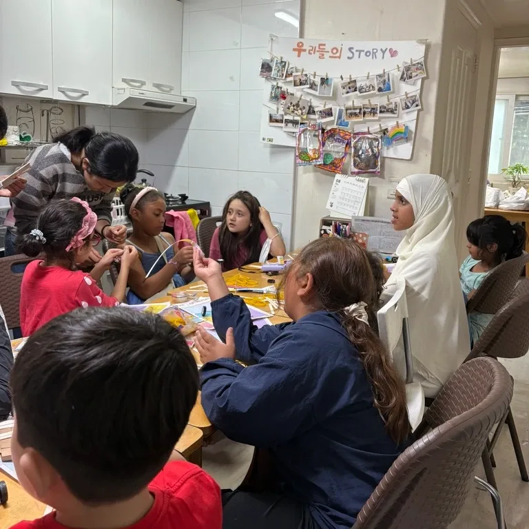

Student-founded. World-aimed
GEMS empowers an alliance for STEM thinkers of all genders. We believe one mentor, one workshop, or one interview can shift someone's trajectory.
Only 35% of STEM graduates worldwide are women. In Korea, that gap widens further. The shortage isn't of capability — it's of exposure, mentorship, and stories.
It started with two students.
JIHU KIM
Senior at Chadwick International School in Songdo, South Korea. Started GEMS as a quantum physics lover and equity enthusiast.
KYLA KIM
Senior at Chadwick International School in Songdo, South Korea. Started GEMS as a chemical engineering lover and education advocate.
Five ways in.

Tutoring
We pair students worldwide with peer tutors in math, science, and engineering — for free.
Workshops
We run hands-on STEM workshops in Korean schools, libraries, and community spaces.
Stories
Through Hidden GEMS, we share conversations with women shaping STEM today.
Experiments
At GEMS Lab, we conduct and share fun and accessible experiments for everyone to enjoy at home with detailed scientific explanation.
Educational resources
We create over 100 pages of textbook content for 10–14 year olds to learn astrophysics, synthetic biology, medicine, and more, along with the UN SDG Goals — opening high-quality education for all.